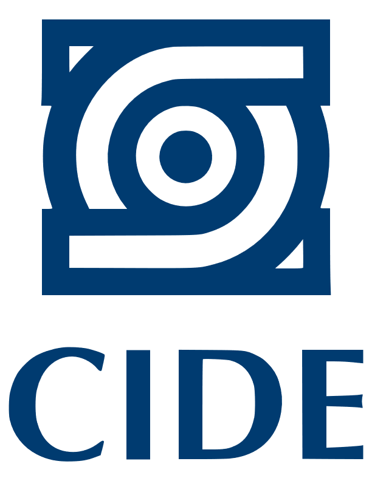

Polarización ideológica y afectiva · Latinoamérica 2027Ideological and affective polarization · Latin America 2027
Que pensar distinto no nos convierta en enemigos.Different politics. Shared society. What divides us?
LAPOP
Se incluirá en el Barómetro de las Américas 2027To be included in the 2027 AmericasBarometerVanderbilt University
Por primera vez, tenemos la oportunidad de medir la polarización afectiva entre votantes de forma comparable en más de 15 países latinoamericanos. Ayúdanos a entender cómo la hostilidad entre ciudadanos se relaciona con sus actitudes hacia la democracia.For the first time, we have the opportunity to measure voter affective polarization comparably across more than 15 Latin American countries. Help us understand how hostility between citizens relates to their attitudes toward democracy.
Distintas preferencias. Una misma sociedad.Different preferences. One shared society.
Ilustración conceptual; no representa datos.Conceptual illustration; does not represent data.
Un módulo del Barómetro de las Américas 2027 · LAPOP · Vanderbilt UniversityA module in the 2027 AmericasBarometer · LAPOP · Vanderbilt University
El problema que queremos entenderThe problem we want to understand
¿Rechazamos sus ideas o a las personas?Do we reject their ideas or the people themselves?
No sentir simpatía hacia un dirigente o partido político no equivale a rechazar a quienes votan por él. Sin embargo, buena parte de la evidencia comparada se concentra en partidos y líderes. Sabemos menos sobre lo que sienten los ciudadanos hacia otros ciudadanos.Disliking a political leader or party does not necessarily mean disliking the people who vote for them. Yet much of the comparative evidence focuses on parties and leaders. We know less about how citizens feel toward one another.
Proponemos medir esa distancia en América Latina y estudiar su relación con la tolerancia política, la confianza institucional y el apoyo a la democracia. El módulo ya está desarrollado. Tu contribución puede apoyar sus siguientes etapas: evaluación, análisis y difusión.We propose measuring that distance across Latin America and studying its relationship with political tolerance, institutional trust, and democratic support. The module has already been developed. Your contribution can support the next stages: evaluation, analysis, and dissemination.
Por qué ahoraWhy now
La oportunidad es regional. La preparación empieza hoy.The opportunity spans a region. Preparation starts today.
El módulo se incluirá en el Barómetro de las Américas 2027 de LAPOP, en Vanderbilt University, lo que abre la oportunidad de estudiar el fenómeno de forma comparable en más de 15 países. Aprovecharla exige coordinar las preguntas y evaluar su funcionamiento antes del trabajo de campo.The module will be included in LAPOP’s 2027 AmericasBarometer at Vanderbilt University, creating an opportunity to study the phenomenon comparably across more than 15 countries. Seizing it requires coordinating the questions and assessing how they work before fieldwork.
La evidencia regional disponible sigue concentrada en pocos países y, con frecuencia, en evaluaciones de líderes y partidos. Medir directamente los sentimientos hacia otros votantes permitiría estudiar una dimensión distinta de las divisiones democráticas.Existing regional evidence remains concentrated in a few countries and often focuses on evaluations of leaders and parties. Measuring feelings toward other voters directly would allow us to study a different dimension of democratic divisions.
Una pregunta concreta, una nueva perspectivaA concrete question, a new perspective
Poner a los ciudadanos en el centro.Put citizens at the center.
El módulo propuesto preguntará cómo se sienten las personas hacia los votantes de distintos partidos o coaliciones. También estudiará sus identidades políticas y su ubicación ideológica.The proposed module will ask people how they feel toward voters of different parties or coalitions. It will also examine their political identities and ideological positions.
4–6grupos de votantes por evaluarvoter groups to evaluate
2–3países propuestos para el pretestcountries proposed for pretesting
Explora cómo se mediríaExplore the proposed measure
¿Qué sientes hacia quienes votan por otro partido?How do you feel toward people who vote for another party?
Mueve el indicador: 0 significa muy desfavorable; 5, neutral; y 10, muy favorable.Move the slider: 0 means very unfavorable, 5 neutral, and 10 very favorable.
/ 10
Muy desfavorableVery unfavorableNeutralNeutralMuy favorableVery favorable
5 indica una valoración neutral. La escala separa los sentimientos hacia otros votantes del desacuerdo con sus ideas.5 indicates a neutral evaluation. The scale distinguishes feelings toward other voters from disagreement with their ideas.
Demostración ilustrativa. No es una encuesta; tu respuesta no se guarda ni se envía.Illustrative demonstration. This is not a survey; your response is neither stored nor sent.
De la evidencia a la conversación públicaFrom evidence to public discussion
Tres preguntas que importan para la vida democrática.Three questions that matter for democratic life.
¿Podemos reconocer los derechos de quienes piensan distinto?Can we recognize the rights of those who disagree?
Estudiaremos si la hostilidad hacia otros votantes se asocia con menor tolerancia política y mayor aceptación de medidas autoritarias.We will examine whether hostility toward other voters is associated with lower political tolerance and greater acceptance of authoritarian measures.
¿Qué pesa más: las ideas o las identidades?What matters more: ideas or identities?
Analizaremos cómo se relacionan el desacuerdo ideológico, la afinidad por un grupo y el rechazo de sus adversarios.We will analyze the relationship between ideological disagreement, attachment to a group, and rejection of its opponents.
¿Cómo cambia la polarización entre países?How does polarization vary across countries?
Compararemos contextos donde los vínculos partidistas son fuertes con otros donde las identidades giran alrededor de líderes y movimientos.We will compare contexts with strong partisan attachments and others where identities center on leaders and movements.
Qué puede hacer posible tu apoyoWhat your support can make possible
El módulo ya está desarrollado. Buscamos aliados para evaluar sus instrumentos, construir evidencia comparable y llevar los resultados a la discusión académica y pública.The module has already been developed. We are seeking partners to assess its instruments, build comparable evidence, and bring the findings into academic and public discussion.
Evaluar y validarEvaluate and validate
Adaptar las preguntas a distintos contextos nacionales y realizar pretests en dos o tres países, según lo planteado en la propuesta.Adapt questions to national contexts and conduct pretests in two or three countries, as outlined in the proposal.
Una unidad concreta de apoyo: el pretest del módulo en un país. Podemos conversar sobre su alcance y preparar el presupuesto correspondiente.A concrete unit of support: pretesting the module in one country. We can discuss its scope and prepare a corresponding budget.
Evaluar la comparabilidad de las medidas y analizar su relación con tolerancia, confianza y apoyo democrático.Assess the comparability of the measures and analyze their relationship with tolerance, trust, and democratic support.
Abrir la conversaciónOpen up the conversation
Preparar un archivo de replicación, artículos comparados y mesas de discusión con colaboradores nacionales.Prepare a replication archive, comparative articles, and roundtables with country collaborators.
Las modalidades de apoyo y sus presupuestos se acordarán con cada posible financiador. El financiamiento del proyecto sigue por definirse.Support arrangements and budgets will be discussed with each potential funder. Project funding remains to be finalized.
Una hoja de ruta verificableA research plan you can follow
Rigor desde el diseño. Resultados para compartir.Rigor from the start. Findings to share.
Finales de 2026 · Primer trimestre de 2027Late 2026 · First quarter of 2027
Con el módulo ya desarrollado, coordinar con LAPOP su evaluación mediante pretests y los ajustes que se deriven de sus resultados.With the module already developed, coordinate its evaluation through pretests with LAPOP and make adjustments informed by the results.
Antes del trabajo de campoBefore fieldwork
Prerregistrar el estudio comparado principal en OSF y coordinar con LAPOP la aplicación del módulo en el Barómetro de las Américas 2027.Preregister the main comparative study on OSF and coordinate with LAPOP on administering the module in the 2027 AmericasBarometer.
Después de publicarse los datosAfter data release
Preparar el archivo de replicación en un plazo previsto de seis meses y desarrollar al menos tres artículos comparados.Prepare the replication archive within a planned six months and develop at least three comparative articles.
Calendario y productos previstos en la propuesta; dependen de financiamiento, coordinación y disponibilidad de los datos.Timeline and outputs planned in the proposal; contingent on funding, coordination, and data availability.
Quiénes impulsan la investigaciónWho is leading the research
Una agenda compartida. Una mirada regional.A shared research agenda. A regional perspective.
Módulo desarrolladoModule developedBuscamos aliados para las siguientes etapas.Seeking partners for the next stages.
Investigador principalPrincipal investigator
Mariano Torcal
Universitat Pompeu Fabra
Catedrático de Ciencia Política e investigador ICREA Acadèmia en la Universitat Pompeu Fabra. Su investigación examina cómo las identidades políticas, la afinidad y la hostilidad se relacionan con el voto y la democracia.Full Professor of Political Science and ICREA Acadèmia researcher at Universitat Pompeu Fabra. His research examines how political identities, affinity, and hostility relate to voting and democracy.
Libro reciente · 2026Recent book · 2026
Votando con odio. Elecciones y hostilidad en España (Catarata). Autor de este estudio sobre polarización y comportamiento electoral. (Catarata). Author of this study of polarization and electoral behavior.
Volumen de referencia · 2025Reference volume · 2025
Ha publicado también en Comparative Political Studies y British Journal of Political Science.His publications also include articles in Comparative Political Studies and the British Journal of Political Science.Ver trayectoriaView research profile

Coinvestigador principalCo-principal investigator
Sergio Béjar
Centro de Investigación y Docencia Económicas
Politólogo en el CIDE. Ha publicado investigaciones sobre polarización afectiva en México y sobre competencia partidista y polarización política en América Latina, con trabajos reconocidos por premios académicos.Political scientist at CIDE. His published research examines affective polarization in Mexico and party competition and political polarization across Latin America, including work recognized by academic awards.
Su trabajo con Juan Andrés Moraes sobre volatilidad electoral y polarización política en América Latina, publicado en His work with Juan Andrés Moraes on electoral volatility and political polarization in Latin America, published in Party Politics (2023), recibió una mención honorífica del Premio Carlos Real de Azúa de la Asociación Uruguaya de Ciencia Política. (2023), received an honorable mention in the Carlos Real de Azúa Award from the Uruguayan Political Science Association.
Cinco investigadores de cuatro universidades aportan una perspectiva comparada sobre las divisiones políticas en la región.Five researchers from four universities bring a comparative perspective to political divisions across the region.
Kenneth M. Roberts
Cornell University
Cesar Zucco
Columbia University
Aaron Schneider
University of Denver
Santiago Anria
Cornell University
Paolo Moncagatta
Universidad San Francisco de Quito
Apoyo institucional en LatinoaméricaInstitutional support in Latin America
Instituciones que apoyan el proyectoInstitutions supporting the project
PanamáPanama
CIEPS
Centro Internacional de Estudios Políticos y Sociales
MéxicoMexico
CIDE
Centro de Investigación y Docencia Económicas
ArgentinaArgentina
CONICET
Consejo Nacional de Investigaciones Científicas y Técnicas
PerúPeru
PUCP
Pontificia Universidad Católica del Perú
Dónde está el proyecto hoyWhere the project stands
El módulo ya está desarrollado y se incluirá en el Barómetro de las Américas 2027 de LAPOP, en Vanderbilt University. Buscamos apoyo para la evaluación de los instrumentos, el análisis comparado y la difusión de los resultados. Los acuerdos de financiamiento de estas actividades siguen por concretarse.The module is already developed and will be included in LAPOP’s 2027 AmericasBarometer at Vanderbilt University. We are seeking support for instrument evaluation, comparative analysis, and dissemination. Funding arrangements for these activities remain to be finalized.
Hagamos posible esta investigaciónHelp make this research possible
Contribuye a entender lo que nos divide.Help us understand what divides us.
Si representas a una fundación, una universidad o una organización interesada en la democracia, o quieres contribuir a título personal, conversemos sobre cómo apoyar el proyecto.If you represent a foundation, university, or organization interested in democracy, or would like to contribute personally, let’s discuss how you can support the project.
El módulo ya está desarrollado.The module is already developed.
Se incluirá en el Barómetro de las Américas 2027 de LAPOP, en Vanderbilt University. Colabora con nosotros para apoyar sus siguientes etapas.It will be included in LAPOP’s 2027 AmericasBarometer at Vanderbilt University. Partner with us to support the next stages.
Tu apoyo empieza con una conversación.Your support starts with a conversation.
Escribe a Sergio Béjar o a Mariano Torcal para iniciar la conversación, explorar una aportación o proponer una colaboración.Write to Sergio Béjar or Mariano Torcal to start a conversation, explore a contribution, or propose a collaboration.
Este contacto permite acordar el mecanismo de aportación. La página no procesa pagos.This contact allows us to agree on contribution arrangements. This page does not process payments.
¿En qué se utilizaría mi contribución?How would my contribution be used?
Con el módulo ya desarrollado, las líneas de apoyo propuestas son la evaluación mediante pretests, el análisis comparado y la difusión de resultados. El destino y el presupuesto de una aportación se acordarán antes de formalizarla.With the module already developed, proposed areas of support include pretesting, comparative analysis, and dissemination. The use and budget of a contribution will be agreed before it is formalized.
¿Dónde se incluirá el módulo?Where will the module be included?
El módulo se incluirá en el Barómetro de las Américas 2027 de LAPOP, en Vanderbilt University. Su desarrollo ya está concluido. El alcance final por países y la coordinación de su aplicación se definirán con LAPOP.The module will be included in LAPOP’s 2027 AmericasBarometer at Vanderbilt University. Its development is complete. Final country coverage and administration arrangements will be coordinated with LAPOP.
¿Qué resultados están previstos?What outputs are planned?
La propuesta contempla el prerregistro del estudio principal, un archivo de replicación, al menos tres artículos comparados y un número especial o volumen editado, además de presentaciones y mesas de discusión.The proposal includes preregistration of the main study, a replication archive, at least three comparative articles, and a special issue or edited volume, along with presentations and roundtables.
¿Puedo participar como investigador/a asociado/a?Can I join as an associated researcher?
Sí, puedes escribirnos para proponer una colaboración. Nos interesa conversar con especialistas que contribuyan a la adaptación nacional del instrumento, la evaluación de las medidas, el análisis comparado o la discusión de los resultados. Las modalidades de participación se acordarán con el equipo.Yes, you can contact us to propose a collaboration. We welcome conversations with specialists who can contribute to adapting the instrument to national contexts, evaluating measures, comparative analysis, or discussing findings. Participation arrangements will be agreed with the team.